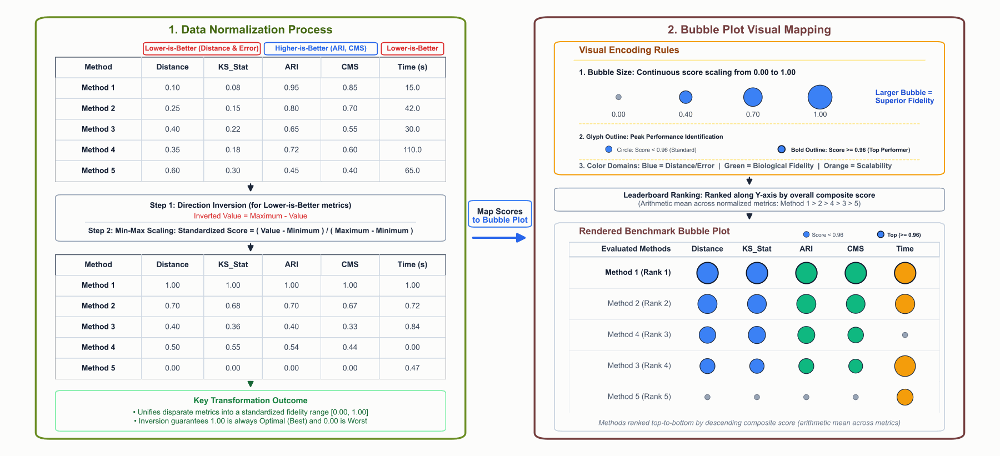
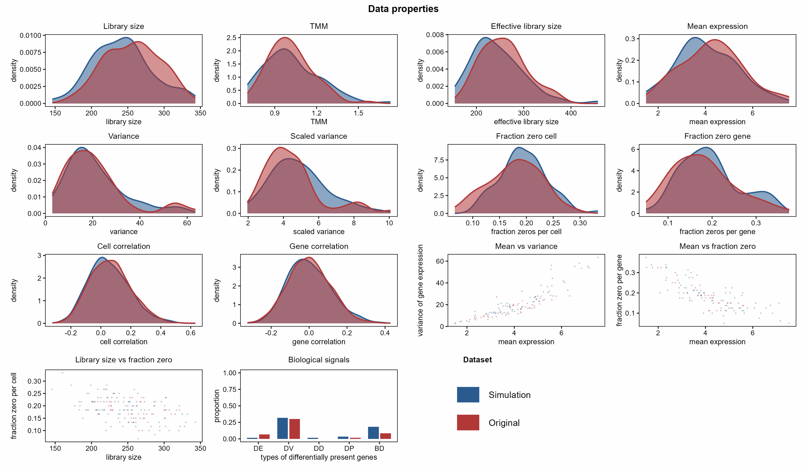
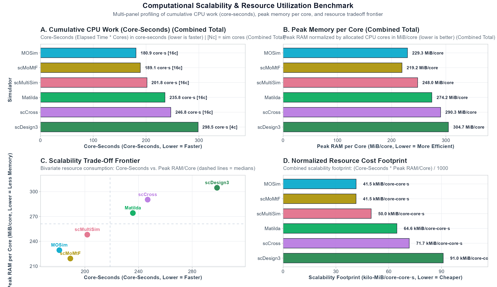
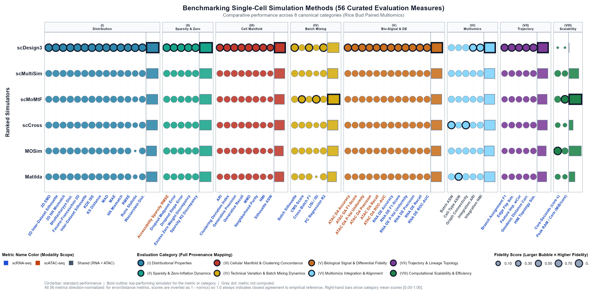
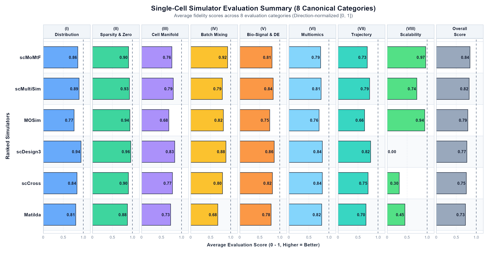
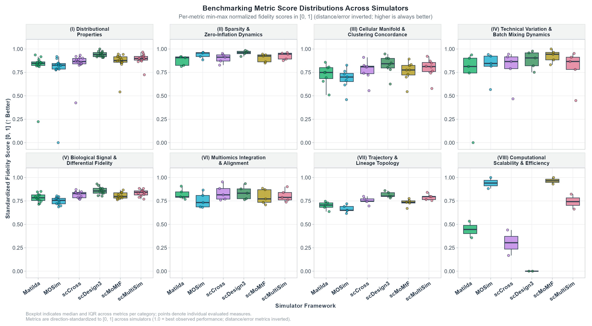
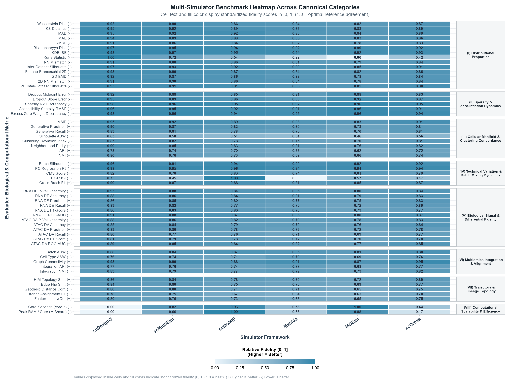
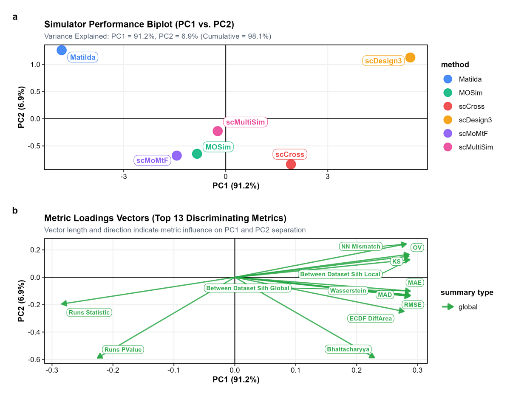

Getting Started with scSimEval: Unified Benchmarking for Single-Cell Multiomics Simulations
Kabilan Sakthivel, Dr. Dwijesh Chandra Mishra, Dr. Shashi Bhushan Lal, Dr. Ulavappa Angadi, Dr. Sudhir Srivastava, Dr. Neeraj Budhlakoti, Dr. Krishna Kumar Chaturvedi, Dr. Ranjeet Ranjan Kumar, Dr. Navin Chandra Gupta, Dr. Sharanbasappa
2026-11-13
Source:vignettes/scSimEval-workflow.Rmd
scSimEval-workflow.Rmd1. Introduction
Computer simulations of single-cell technologies—specifically single-cell RNA sequencing (scRNA-seq), single-cell ATAC sequencing (scATAC-seq), and scRNA-seq + scATAC-seq multiomics—are essential in bioinformatics for developing pipelines, optimizing analysis workflows, and evaluating statistical methods. A fundamental question for any benchmark is: how realistically does the simulated data replicate genuine biological experiments?
scSimEval provides a standardized,
reference-based benchmarking framework computing 56 curated
evaluation measures across 8 foundational categories:
-
Experimental reference data (
ref_rna,ref_atac) -
Simulated synthetic data (
sim_rna,sim_atac) -
Cell type annotations (
cell_types, optional) -
Batch or donor identifiers
(
batch_info, optional) - Computer resources (Core-seconds and memory footprint per core in MiB)
- Developmental trajectories (automatically inferred directly from count matrices)

Figure 1: Unified benchmarking architecture of scSimEval. The end-to-end framework ingests reference and simulated single-cell and multiomics count matrices with experimental metadata, evaluates 56 curated evaluation measures across eight biological and computational dimensions, standardizes scores via direction-aware normalization, and generates publication-grade comparative visualizations and leaderboards.
Supported Multiomics Modalities:
scSimEvalnatively supports two multiomics experimental designs:4 Paired (co-assays where RNA and ATAC are measured from identical cells, e.g. 10x Multiome, SHARE-seq) with full cross-modal coupling evaluation; and Unpaired (independent scRNA-seq and scATAC-seq from separate cells of the same tissue) with unimodal evaluation plus population-level cross-modal concordance metrics. See the dedicated Multiomics vignette for detailed multiomics workflows.
2. Input Data Formats and Metric Measurement Capacity
2.1 Input Data Formats & Metadata Requirements
scSimEval accepts standard single-cell count matrices
and optional metadata:
-
Count Matrices (
ref,sim):- Dimensions: Features (Genes or ATAC Peaks) in rows Cells in columns.
-
Data Types: R sparse matrices
(
dgCMatrix), standard numeric matrices,data.frame,SingleCellExperiment, orSeurat.
-
Cell-Type Annotations (
cell_types, optional):Used for Category III clustering fidelity (ARI, NMI, Silhouette width) and Category V biological signal preservation.
-
Character vector or factor matching cell columns:
-
Batch Annotations (
batch_info, optional):Used for Category IV batch effect and confounder mixing metrics (CMS, Inverse Simpson’s Index, PCR , Batch Silhouette, Seurat mixing, cross-batch F1).
-
Character vector or factor matching cell columns:
-
Exporting Annotations from Seurat or SingleCellExperiment:
# From Seurat: cell_types <- as.character(Idents(seurat_obj)) batch_info <- as.character(seurat_obj$batch) # From SingleCellExperiment: cell_types <- as.character(SummarizedExperiment::colData(sce)$cell_type) batch_info <- as.character(SummarizedExperiment::colData(sce)$batch)
2.2 Metric Measurement Capacity by Data & Metadata Mode
scSimEval automatically scales its evaluation depth
based on the input matrices and metadata provided. The exact metric
counts measured by the updated package across the built-in reference
datasets (example_scrna, example_scatac,
example_rice_bud, and example_soybean_root)
are summarized below:
| Experiment Mode | Uploaded Inputs | Metrics Measured | Active Evaluation Categories & Scope |
|---|---|---|---|
| Single-Cell (scRNA / scATAC) | Count Matrix alone (no metadata) | 19 Metrics (scRNA) / 14 (scATAC) | Cat I (Distributional Properties), Cat II (Sparsity & Zeroes), Cat III (Cellular Manifolds), Cat VII (dynverse Trajectory: 5 metrics, scRNA-seq only), and Cat VIII (Scalability). |
| Single-Cell (scRNA / scATAC) | Matrix + Cell Types | 33 Metrics | Adds +12 metrics: Unlocks Cat III (Clustering: ARI, NMI, Silhouette, Davies-Bouldin) and Cat V (Biological Signal & Differential Fidelity: DE/DA score, p-value distribution score, true proportion, accuracy, precision, recall, F1, AUC). |
| Single-Cell (scRNA / scATAC) | Matrix + Batch Info | 27 Metrics | Adds +6 metrics: Unlocks Cat IV (Batch Effects: Batch Silhouette, PCR , CMS, ISI, Seurat mixing metric, cross-batch F1). |
| Single-Cell (scRNA / scATAC) | Full Metadata (Matrix + Cell Types + Batch) | 39 Metrics | Unlocks the complete unimodal suite across Categories I, II, III, IV, V, VI, and VIII. |
| Paired Multiomics (scRNA + scATAC - Rice Bud) | RNA + ATAC Matrices alone | 33 Metrics | Both unimodal distributions, correlations, manifolds, trajectories PLUS Cat VI (Multiomics Integration: Batch ASW, Cell-Type ASW, Graph Connectivity, ARI, NMI, and Scalability). |
| Paired Multiomics (scRNA + scATAC - Rice Bud) | Matrices + Cell Types | 41 Metrics | Unlocks Cat III clustering and Cat V biological signal fidelity across both modalities. |
| Paired Multiomics (scRNA + scATAC - Rice Bud) | Matrices + Batch Info | 39 Metrics | Unlocks Cat IV batch effects and confounder integration. |
| Paired Multiomics (scRNA + scATAC - Rice Bud) | Full Metadata (RNA + ATAC + Cell Types + Batch) | All 56 Measures | Complete multiomics benchmark suite across all 8 canonical categories (Categories I–VIII). |
| Unpaired Multiomics (Independent cells - Soybean Root) | RNA + ATAC Matrices alone | 27 Metrics | Both unimodal distributions plus population-level integration and Scalability. |
| Unpaired Multiomics (Independent cells - Soybean Root) | Full Metadata (RNA + ATAC + Cell Types + Batch) | 41 Metrics | Complete unpaired multiomics suite: Unlocks cluster concordance, donor batch integration, biological signals, and integration metrics. |
3. Score Normalization and Visual Mapping Workflow
In single-cell benchmarking, metrics operate on disparate scales and directions: statistical distances are near zero (lower is better), runtime is in seconds, peak memory is in MiB, and clustering accuracy ranges in (higher is better).
scSimEval resolves this through an automated
two-step score normalization pipeline:

Figure 2: Score normalization and visual mapping workflow in scSimEval. Box 1 shows the two-step normalization: direction inversion for lower-is-better metrics followed by min-max scaling to a standard [0, 1] range. Box 2 illustrates visual mapping into bubble matrices, where bubble size reflects simulation quality and top performers are highlighted with bold circular outlines.
- Direction Inversion: For metrics where smaller values indicate better simulations (e.g. KS distance, Wasserstein distance, RMSE, runtime, peak RAM), scores are inverted:
- Min-Max Scaling ( to ): Values are scaled so universally represents best observed performance:
In bubble matrix visualizations, bubble size directly reflects standardized quality, bold circular outlines highlight the top-performing simulator for each metric, and category colors organize the evaluation dimensions.
4. Installation and Quick Start
Install and load scSimEval from
GitHub:
if (!requireNamespace("devtools", quietly = TRUE)) install.packages("devtools")
devtools::install_github("kabilanbio/scSimEval")
library(scSimEval)scSimEval provides built-in reference datasets for
instant testing: * example_scrna:
Empirical reference and simulated scRNA-seq count matrices
()
with cell types and batch annotations. *
example_scatac: Empirical reference and
simulated scATAC-seq peak matrices
().
* example_rice_bud: Option B standardized
Seurat v5 paired single-cell multiomics benchmark dataset
of rice bud tissue (100 cells, 200 genes, 200 peaks, 4 cell types, 2
batches across 6 simulators). *
example_soybean_root: Option B
standardized Seurat v5 unpaired single-cell multiomics
benchmark dataset of soybean root tissue (100 RNA cells, 100 ATAC cells,
200 genes, 200 peaks, 4 cell types, 2 batches across 3 simulators).
data(example_scrna, package = "scSimEval")
data(example_scatac, package = "scSimEval")
cat("scRNA-seq dimensions:", dim(example_scrna$ref), "\n")
#> scRNA-seq dimensions: 60 80
cat("scATAC-seq dimensions:", dim(example_scatac$ref), "\n")
#> scATAC-seq dimensions: 60 80
cat("Cell types present:", levels(example_scrna$cell_types), "\n")
#> Cell types present: TypeA TypeB5. Evaluating Data Properties and Distributions (Categories I & II)
evaluate_simulation_accuracy() computes 1D and 2D
distribution distances and zero-inflation patterns between reference and
simulated matrices:
unimodal_res <- evaluate_simulation_accuracy(
ref_data = example_scrna$ref,
sim_data = example_scrna$sim,
compute_bivariate = FALSE,
verbose = FALSE
)
# Preview library size distribution metrics
lib_summary <- subset(unimodal_res$metrics_summary_table, Property == "library_size")
knitr::kable(head(lib_summary, 6), digits = 4, caption = "Library Size Statistical Distance Measures")| Category | Property | Metric | Value |
|---|---|---|---|
| Distributional Properties | library_size | Wasserstein | 15.0625 |
| Distributional Properties | library_size | KS | 0.2125 |
| Distributional Properties | library_size | MAD | 15.0000 |
| Distributional Properties | library_size | Bhattacharyya | 0.0001 |
| Distributional Properties | library_size | Runs_Statistic | -1.7447 |
| Distributional Properties | library_size | NN_Mismatch | 0.1750 |
5.1 Comparative Distribution QC Plot
(plot_distribution_qc)
plot_distribution_qc() generates a multi-panel layout
comparing properties such as library size, mean expression, gene
variance, zero proportions, and cell-cell correlations:

Figure 3: Comparative distribution QC layout. Compares real biological data (warm brick red) and simulated data (steel blue) across single-cell distributional properties, mean-variance trends, and zero-inflation curves.
plot_distribution_qc(
ref_data = example_scrna$ref,
sim_data = example_scrna$sim,
title = "Data Properties Quality Control",
ref_name = "Real Data",
sim_name = "Simulated Data",
cell_types = example_scrna$cell_types
)6. Evaluating Cell Clustering and Group Structure (Category III)
evaluate_clustering_metrics() assesses whether simulated
data preserve unsupervised cluster separability and ground-truth
cell-type boundaries:
clust_res <- evaluate_clustering_metrics(
data = example_scrna$sim,
cell_types = example_scrna$cell_types,
ref_data = example_scrna$ref
)
cat("Average Silhouette Width:", round(clust_res$silhouette, 4), "\n")
#> Average Silhouette Width: 0.0034
cat("Neighborhood Purity:", round(clust_res$neighborhood_purity, 4), "\n")
#> Neighborhood Purity: 0.4775
cat("Adjusted Rand Index (ARI):", round(clust_res$ARI, 4), "\n")
#> Adjusted Rand Index (ARI): -0.0098
cat("Normalized Mutual Information (NMI):", round(clust_res$NMI, 4), "\n")
#> Normalized Mutual Information (NMI): 0.00197. Evaluating Batch Effects and Technical Confounders (Category IV)
evaluate_batch_metrics() checks whether simulated
multi-batch data properly capture technical batch variations without
obscuring biological signals:
batch_res <- evaluate_batch_metrics(
data = example_scrna$sim,
batch_info = example_scrna$batch_info,
cell_types = example_scrna$cell_types,
verbose = FALSE
)
cat("Batch Silhouette:", round(batch_res$batch_silhouette, 4), "\n")
#> Batch Silhouette: -0.0027
cat("PC Regression R2 (PCR):", round(batch_res$pcr_r2, 4), "\n")
#> PC Regression R2 (PCR): 0.0095
cat("Cross-Batch Transfer F1:", round(batch_res$cross_batch_F1, 4), "\n")
#> Cross-Batch Transfer F1: 0.51268. Evaluating Cell Lineages and Trajectory Topology (Category VII)
scSimEval implements the standardized dynverse
trajectory evaluation workflow (Saelens et al., Nature
Biotechnology, 2019) specifically within Category VII
(preprocess_trajectory_hvgs() +
evaluate_trajectory_metrics()). Because this workflow
models HVG transcriptomic expression dynamics, Category VII is evaluated
on scRNA-seq only and automatically skipped for
scATAC-seq:
- Outlier Cell & Low-Expression QC: 3-MAD outlier cell removal on library size, detected genes, and mitochondrial fraction; retains genes expressed in of cells with average expression .
-
HVG Selection & Zero-Convergence: Decomposes
log-variance via
scran::modelGeneVar(FDR < 0.05, biological variance , with adaptive fallback on sparse test sets) and iteratively removes all-zero cells/features. -
Trajectory &
wcor_features: Infers continuous Minimum Spanning Tree (MST) milestone graphs, evaluateshim,edge_flip,geodesic_correlation, andF1_branches, and trainsrangerRandom Forests (num_trees = 10000,mtry = 1%of HVGs,importance = "impurity") predicting cell-to-milestone geodesic distances to compute reference-weightedwcor_features.
traj_res <- evaluate_trajectory_metrics(
ref_data = example_scrna$ref,
sim_data = example_scrna$sim,
cell_types_ref = example_scrna$cell_types,
cell_types_sim = example_scrna$cell_types,
num_trees = 500L
)
cat("HIM Topology Similarity:", round(traj_res$him, 4), "\n")
#> HIM Topology Similarity: 1
cat("Edge Flip Similarity:", round(traj_res$edge_flip, 4), "\n")
#> Edge Flip Similarity: 1
cat("Geodesic Distance Correlation:", round(traj_res$geodesic_correlation, 4), "\n")
#> Geodesic Distance Correlation: 0.4849
cat("Branch Assignment F1:", round(traj_res$F1_branches, 4), "\n")
#> Branch Assignment F1: 1
cat("Dynamic Feature Importance wCor:", round(traj_res$wcor_features, 4), "\n")
#> Dynamic Feature Importance wCor: 0.1949. Evaluating Biological Signal and Differential Fidelity (Category V)
evaluate_deg_fidelity() evaluates whether simulated
counts preserve true differential expression signals (SimBench DE, DP,
DV, DD, BD), cell-type classification accuracy, and top-DEG Jaccard
overlap:
deg_res <- evaluate_deg_fidelity(
ref_data = example_scrna$ref,
sim_data = example_scrna$sim,
ref_celltypes = example_scrna$cell_types,
sim_celltypes = example_scrna$cell_types,
top_n_de = 50
)
knitr::kable(head(deg_res$deg_summary_table, 6), digits = 4)10. Evaluating Computational Scalability & Efficiency (Category VIII)
plot_scalability_benchmark() generates a comprehensive
dashboard comparing core-normalized CPU execution time
(Core-Seconds,
),
per-core memory demand (Peak RAM per Allocated Core,
in MiB/core or GiB/core), Bivariate
Core-Seconds vs. Memory per Core tradeoff frontiers, and normalized
resource cost:

Figure 4: Computational scalability benchmark suite. Multi-panel dashboard comparing cumulative CPU work (Core-Seconds), per-core peak RAM footprint (MiB/core), resource tradeoff frontiers, and normalized resource cost across simulation methods.
data(example_rice_bud, package = "scSimEval")
plot_scalability_benchmark(example_rice_bud$scalability_benchmarks)11. Master Multiomics Pipeline:
evaluate_multiomics_accuracy
The flagship pipeline function
evaluate_multiomics_accuracy() executes the complete
benchmark across all 8 canonical categories in a single call:
data(example_rice_bud, package = "scSimEval")
# Option B Seurat v5 objects embed counts, cell_type, batch, and integrated reductions
master_eval <- evaluate_multiomics_accuracy(
ref_multi = example_rice_bud$reference$combined,
sim_multi = example_rice_bud$simulated$scMultiSim$combined,
pairing = "paired",
elapsed_time = 12.4,
memory_mb = 248,
verbose = FALSE
)
# Tidy summary table containing the evaluated benchmark metrics
head(master_eval$metrics_summary_table)HPC Multi-Core Parallelization: Specifying
threads = 4orthreads = 8parallelizes 2D distribution tests and cross-modal peak-to-gene correlations viaBiocParallel.
12. Visualization Suite
scSimEval provides built-in visualization functions
generating publication-ready figures (supporting 600 DPI export).
12.1 Multi-Dimensional Benchmarking Bubble Matrix
(plot_benchmark_bubble_matrix)
The flagship visualization
plot_benchmark_bubble_matrix() summarizes
multi-simulator performance across the 8 evaluation categories. Bubble
sizes represent standardized simulation quality
(
to
;
larger is better), and top performers for each metric are highlighted
with bold circular outlines:

Figure 5: Flagship multi-dimensional benchmarking bubble matrix. Ranks simulation methods top-to-bottom across the 8 evaluation categories based on the 56 curated evaluation metric analysis. Bubble sizes indicate standardized fidelity scores ( to ), and top performers for each metric are highlighted with bold circular outlines.
# Render benchmark bubble matrix
plot_benchmark_bubble_matrix(
data = demo_benchmark_results,
bubble_size_range = c(2, 7.5),
title = "Benchmarking Single-Cell Simulation Methods (56 Curated Evaluation Suite)",
subtitle = "Comparative performance across 8 evaluation categories"
)12.2 Evaluation Summary Horizontal Bar Matrix
(plot_evaluation_summary)
plot_evaluation_summary() ranks candidate simulators
from best to worst and displays average scores across all evaluation
categories:

Figure 6: Executive evaluation summary horizontal bar matrix. Ranks simulators across the 8 categories and displays overall composite performance with exact score annotations.
# Extract method leaderboard
leaderboard <- compute_method_leaderboard(demo_benchmark_results)
knitr::kable(leaderboard, digits = 4, caption = "Simulator Performance Leaderboard")12.3 Metric Score Distributions Across Categories
(plot_metric_boxplots)
plot_metric_boxplots() displays score distributions and
individual metric data points across the 8 categories:

Figure 7: Metric score distributions across the 8 categories. Displays standardized scores (, higher is better) with individual data points and boxplots across candidate simulators.
12.4 Complete Benchmark Heatmap
(plot_metric_heatmap)
plot_metric_heatmap() displays exact numeric values for
every metric inside each cell:

Figure 8: Complete benchmark metric heatmap. Displays exact unnormalized raw scores in bold text inside every cell, grouped across the 8 evaluation categories.
12.5 Dimension Reduction and Ordination Plots (PCA & MDS)
plot_metric_pca() and plot_metric_mds()
project simulation methods into 2D metric ordination space:

Figure 9: Principal Component Analysis (PCA) ordination of simulation methods. Projects simulators based on their metric profiles, showing algorithmic affinities and key discriminating metric vectors.
12.6 Cell Embeddings (t-SNE, UMAP, & PCA) and Low-Dimensional Quality Metrics
scSimEval enables visual and quantitative inspection of
whether simulated cells faithfully recover biological manifolds:
# Compute low-dimensional embeddings
emb_data <- compute_dataset_embeddings(
reference = example_scrna$ref,
simulated = list("Splatter" = example_scrna$sim),
reduction = "pca",
n_pcs = 10,
cell_types = example_scrna$cell_types,
batch = example_scrna$batch_info
)
# Quantitative low-dimensional quality metrics
quality_table <- compute_embedding_quality_metrics(emb_data)
knitr::kable(quality_table, digits = 4, caption = "Quantitative Low-Dimensional Quality Metrics")| Dataset | Role | Cells (N) | Mean Silhouette | ARI (Cluster Fidelity) | Mean Library Size | Mean Detected Features | Library Size Diff (%) |
|---|---|---|---|---|---|---|---|
| Reference | Reference | 80 | -0.0101 | -0.0067 | 256.3 | 49.2 | 0.00 |
| Splatter | Simulated | 80 | 0.0037 | -0.0071 | 242.3 | 48.3 | 5.46 |
13. Multi-Dataset and Multi-Method Benchmarking
For studies evaluating simulators across multiple biological cohorts
or tissues, scSimEval provides automated multi-dataset
tools:
# Combine independent benchmark sessions into a unified multi-dataset object
multi_bench <- combine_benchmark_results(
benchmark_rice,
benchmark_soybean,
dataset_names = c("Rice Bud (Paired)", "Soybean Root (Unpaired)")
)
# Compute cross-dataset average fidelity leaderboard
compute_method_leaderboard(multi_bench)
# Step-by-step interactive figure zoom (+30% magnification)
p_zoomed <- zoom_plot(p_bubble, zoom = 1.3)14. Interactive Web Application (Shiny Studio)
For researchers who prefer a graphical interface,
launch_scSimEval_app() opens the interactive Benchmarking
Studio:
# Launch interactive Shiny studio in default browser
launch_scSimEval_app()The studio is organized into 8 modular tabs: 1.
Home: Overview of the 56 curated evaluation measures
and interactive tour. 2. Data Hub: 4 ingestion modes
(Demo benchmark data, Single-cell evaluation, Multi-omics co-assays, and
Upload saved results) with QC inspection and automated SLURM script
generation. 3. Comparative Bubble Matrix &
Leaderboard: 56-metric matrix with multi-dataset selectors,
step-by-step zoom, podium rankings, and standalone R script download. 4.
Visualizations: Diagnostic panels for Evaluation
Summary, Distribution QC, Scalability, Metric Boxplots, Heatmaps,
PCA/MDS, and Cell Embeddings. 5. Results & Export:
Dual-value table reporting (Score_Raw and normalized
Score) with Excel, CSV, RDS, and ZIP export handlers. 6.
Help & Manual: Formula glossary, hardware
recommendations, and input templates. 7. Logs &
Diagnostics: Real-time event streaming and diagnostic
tracebacks. 8. About & Authors: Complete author
team profiles, institutional details, and academic citation links.
15. Supported Multiomics Data Types and Metric Compatibility
15.1 Two Experimental Designs
scSimEval strictly evaluates single-cell multiomics
simulations according to experimental design:
| Data Type | Definition | Example Technologies |
|---|---|---|
| Paired | RNA and ATAC measured from exactly the same cells | 10x Multiome, SHARE-seq, SNARE-seq |
| Unpaired | RNA and ATAC measured from separate cells of the same tissue | Independent 10x scRNA-seq + scATAC-seq experiments |
15.2 Metric Compatibility by Data Type
| Evaluation Dimension & Metric Group | Paired Multiomics | Unpaired Multiomics | Unimodal (scRNA / scATAC) |
|---|---|---|---|
| (I) Distributional Properties (10 univariate + 4 bivariate across 7 cell, 7 feature, and 4 bivariate pairs) | ✅ (All 14) | ✅ (All 14) | ✅ (All 14) |
| (II) Sparsity & Zero-Inflation Dynamics (Logistic dropout midpoint/slope/, accessibility-sparsity RMSE/, excess zero weights) | ✅ (All 5) | ✅ (All 5) | ✅ (3 scRNA / 3 scATAC) |
| (III) Cellular Manifold & Clustering Concordance (MMD, Generative Precision/Recall, Silhouette ASW, CDI, Neighborhood Purity, ARI, NMI) | ✅ (All 8) | ✅ (All 8) | ✅ (All 8) |
| (IV) Technical Variation & Batch Mixing Dynamics (Batch Silhouette, PCR , CMS, ISI, Cross-batch F1) | ✅ (All 5) | ✅ (All 5) | ✅ (All 5) |
(V) Biological Signal & Differential Fidelity
(Parallel scRNA-seq DE [6] and scATAC-seq DA [6] pseudobulk
edgeR-QLF suites) |
✅ (All 12) | ✅ (All 12) | ✅ (6 per modality) |
(VI) Multiomics Integration & Alignment
(batch_asw, cell_type_asw,
graph_connectivity, ari,
nmi) |
✅ (All 5) | ✅ (All 5) | ❌ (Multiomics only) |
(VII) Trajectory & Lineage Topology
(him, edge_flip,
geodesic_correlation, F1_branches,
wcor_features) |
✅ (All 5, scRNA-seq) | ✅ (All 5, scRNA-seq) | ✅ (5 scRNA / ❌ scATAC) |
(VIII) Computational Scalability & Efficiency
(core_seconds, memory_per_core_mib) |
✅ (Both 2) | ✅ (Both 2) | ✅ (Both 2) |
| Total Evaluation Capacity | All 56 Measures | All 56 Measures | 40 (scRNA) / 35 (scATAC) |
| Direct Pipeline Support | evaluate_multiomics_accuracy(..., pairing="paired") |
evaluate_multiomics_accuracy(..., pairing="unpaired") |
evaluate_simulation_accuracy() |
15.3 Recommended Workflows by Data Type
Paired data — run the master multiomics pipeline directly:
evaluate_multiomics_accuracy(
ref_multi = list(rna = ref_rna, atac = ref_atac),
sim_multi = list(rna = sim_rna, atac = sim_atac),
cell_types = cell_types,
batch_info = batch_info,
pairing = "paired"
)Unpaired data — run the master multiomics pipeline
with pairing = "unpaired":
evaluate_multiomics_accuracy(
ref_multi = list(rna = ref_rna, atac = ref_atac),
sim_multi = list(rna = sim_rna, atac = sim_atac),
cell_types = list(rna = rna_cell_types, atac = atac_cell_types),
batch_info = list(rna = rna_batches, atac = atac_batches),
pairing = "unpaired"
)16. Large-Scale Multi-Dataset Benchmarking on HPC Clusters
When evaluating simulation tools across multiple biological cohorts
(e.g. 6 simulators across 16 datasets),
benchmark_simulation_suite() optimizes memory management
and cluster multithreading:
# Run high-performance multi-dataset benchmark
mset_bench <- benchmark_simulation_suite(
datasets = refs,
simulators = sims,
threads = 8,
auto_sparse = TRUE,
run_gc = TRUE,
save_path = "my_multidataset_benchmark.rds"
)
# Plot consolidated bubble matrix
plot_benchmark_bubble_matrix(mset_bench)17. Summary
scSimEval provides a unified, objective, and
reference-based evaluation framework for benchmarking single-cell and
multiomics simulation methods. With 56 curated evaluation
measures across 8 foundational categories, automated score
normalization, and publication-quality visualizations, it enables
researchers to rigorously validate simulation tools with confidence.
18. Authors and Maintainers
Kabilan Sakthivel (Ph.D. Scholar & Maintainer, ICAR-IASRI) —
kabilan151414@gmail.comDr. Dwijesh Chandra Mishra (Principal Scientist & Thesis Guide, ICAR-IASRI) —
dwij.mishra@gmail.comDr. Shashi Bhushan Lal (Principal Scientist, ICAR-IASRI) —
sblall16@gmail.comDr. Ulavappa Angadi (Principal Scientist, ICAR-IASRI) —
ubaangadi.iasri@icar.org.inDr. Sudhir Srivastava (Senior Scientist, ICAR-IASRI) —
sudhir0401bm@gmail.comDr. Neeraj Budhlakoti (Senior Scientist, ICAR-IASRI) —
neeraj35669@gmail.comDr. Krishna Kumar Chaturvedi (Principal Scientist, ICAR-IASRI) —
kkcchaturvedi@gmail.comDr. Ranjeet Ranjan Kumar (Senior Scientist, ICAR-IARI) —
ranjeetranjaniari@gmail.comDr. Navin Chandra Gupta (Senior Scientist, ICAR-NIPB) —
navinbtc@gmail.comDr. Sharanbasappa (Scientist & Contributor, ICAR-IASRI) —
smadival509@gmail.comGitHub Repository: https://github.com/kabilanbio/scSimEval
Bug Reports & Issues: https://github.com/kabilanbio/scSimEval/issues
19. Session Information
sessionInfo()
#> R version 4.6.1 (2026-06-24 ucrt)
#> Platform: x86_64-w64-mingw32/x64
#> Running under: Windows 11 x64 (build 26300)
#>
#> Matrix products: default
#> LAPACK version 3.12.1
#>
#> locale:
#> [1] LC_COLLATE=English_India.utf8 LC_CTYPE=English_India.utf8
#> [3] LC_MONETARY=English_India.utf8 LC_NUMERIC=C
#> [5] LC_TIME=English_India.utf8
#>
#> time zone: Asia/Calcutta
#> tzcode source: internal
#>
#> attached base packages:
#> [1] stats graphics grDevices utils datasets methods base
#>
#> other attached packages:
#> [1] scSimEval_0.99.10
#>
#> loaded via a namespace (and not attached):
#> [1] fs_2.1.0 matrixStats_1.5.0
#> [3] spatstat.sparse_3.2-0 httr_1.4.9
#> [5] RColorBrewer_1.1-3 ggsci_5.2.0
#> [7] tools_4.6.1 sctransform_0.4.3
#> [9] R6_2.6.1 uwot_0.2.5
#> [11] withr_3.0.3 sp_2.2-3
#> [13] gridExtra_2.3.1 progressr_1.0.0
#> [15] cli_3.6.6 Biobase_2.73.2
#> [17] textshaping_1.0.5 spatstat.explore_3.8-3
#> [19] fastDummies_1.7.6 sass_0.4.10
#> [21] Seurat_5.5.1 S7_0.2.2
#> [23] spatstat.data_3.1-9 readr_2.2.0
#> [25] proxy_0.4-29 ggridges_0.5.7
#> [27] pbapply_1.7-5 pkgdown_2.2.1
#> [29] systemfonts_1.3.2 dichromat_2.0-1
#> [31] scater_1.41.2 parallelly_1.48.0
#> [33] limma_3.99.0 MLmetrics_1.1.3
#> [35] RSQLite_3.53.3 generics_0.1.4
#> [37] ica_1.0-3 spatstat.random_3.5-2
#> [39] dplyr_1.2.1 Matrix_1.7-6
#> [41] ggbeeswarm_0.7.3 S4Vectors_0.51.10
#> [43] abind_1.4-8 lifecycle_1.0.5
#> [45] yaml_2.3.12 edgeR_4.99.6
#> [47] SummarizedExperiment_1.43.0 SparseArray_1.13.2
#> [49] BiocFileCache_3.3.0 provenance_4.4
#> [51] Rtsne_0.17 grid_4.6.1
#> [53] blob_1.3.0 promises_1.5.0
#> [55] dqrng_0.4.1 crayon_1.5.3
#> [57] miniUI_0.1.2 lattice_0.22-9
#> [59] dynwrap_1.3.0 beachmat_2.29.3
#> [61] cowplot_1.2.0 dynfeature_1.0.1
#> [63] metapod_1.21.0 pillar_1.11.1
#> [65] knitr_1.52 GenomicRanges_1.65.4
#> [67] boot_1.3-32 future.apply_1.20.2
#> [69] kSamples_1.2-12 codetools_0.2-20
#> [71] glue_1.8.1 spatstat.univar_3.2-0
#> [73] remotes_2.5.0 clusterSim_0.51-6
#> [75] data.table_1.18.6.1 dynparam_1.0.2
#> [77] vctrs_0.7.3 CDI_1.11.0
#> [79] png_0.1-9 spam_2.11-4
#> [81] Rdpack_2.6.6 testthat_3.3.2
#> [83] gtable_0.3.6 assertthat_0.2.1
#> [85] cachem_1.1.0 xfun_0.60
#> [87] rbibutils_2.4.1 S4Arrays_1.13.0
#> [89] mime_0.13 Seqinfo_1.3.2
#> [91] coda_0.19-4.1 reformulas_0.4.4
#> [93] survival_3.8-12 SingleCellExperiment_1.35.2
#> [95] statmod_1.5.2 bluster_1.23.1
#> [97] fitdistrplus_1.2-6 ROCR_1.0-12
#> [99] nlme_3.1-171 dynutils_1.0.12
#> [101] eva_0.2.7 bit64_4.8.6
#> [103] filelock_1.0.3 RcppAnnoy_0.0.23
#> [105] dyneval_0.9.9 bslib_0.12.0
#> [107] irlba_2.3.7 waddR_1.27.0
#> [109] vipor_0.4.7 KernSmooth_2.23-26
#> [111] otel_0.2.0 BiocGenerics_0.59.12
#> [113] DBI_1.3.0 ade4_1.7-24
#> [115] processx_3.9.0 carrier_0.3.0.4
#> [117] tidyselect_1.2.1 proxyC_0.5.2
#> [119] bit_4.6.0 compiler_4.6.1
#> [121] curl_8.0.0 httr2_1.3.0
#> [123] BiocNeighbors_2.7.3 randtests_1.0.2
#> [125] desc_1.4.3 DelayedArray_0.39.8
#> [127] plotly_4.12.1 scales_1.4.0
#> [129] lmtest_0.9-40 stringr_1.6.0
#> [131] digest_0.6.39 goftest_1.2-3
#> [133] spatstat.utils_3.2-5 minqa_1.2.8
#> [135] rmarkdown_2.32 XVector_0.52.0
#> [137] RhpcBLASctl_0.23-42 htmltools_0.5.9
#> [139] pkgconfig_2.0.3 lme4_2.0-6
#> [141] MatrixGenerics_1.25.0 dbplyr_2.6.0
#> [143] fastmap_1.2.0 rlang_1.3.0
#> [145] htmlwidgets_1.6.4 shiny_1.14.0
#> [147] SuppDists_1.1-9.9 farver_2.1.2
#> [149] jquerylib_0.1.4 zoo_1.9-1
#> [151] jsonlite_2.0.0 mclust_6.1.3
#> [153] BiocParallel_1.47.0 BiocSingular_1.29.1
#> [155] magrittr_2.0.5 scuttle_1.23.2
#> [157] dotCall64_1.2 patchwork_1.3.2
#> [159] Rcpp_1.1.2 viridis_0.6.5
#> [161] reticulate_1.47.0 stringi_1.8.9
#> [163] brio_1.1.5 MASS_7.3-66
#> [165] plyr_1.8.9 parallel_4.6.1
#> [167] listenv_1.0.0 ggrepel_0.9.8
#> [169] deldir_2.0-4 splines_4.6.1
#> [171] tensor_1.5.1 hms_1.1.4
#> [173] locfit_1.5-9.12 ranger_0.18.0
#> [175] igraph_2.3.3 babelwhale_1.2.0
#> [177] spatstat.geom_3.8-3 RcppHNSW_0.7.0
#> [179] reshape2_1.4.5 stats4_4.6.1
#> [181] ScaledMatrix_1.21.0 philentropy_0.10.0
#> [183] evaluate_1.0.5 SeuratObject_5.4.0
#> [185] RcppParallel_6.2.1 IsoplotR_7.0
#> [187] scran_1.41.1 tzdb_0.5.0
#> [189] nloptr_2.2.1 httpuv_1.6.17
#> [191] RANN_2.6.3 tidyr_1.3.2
#> [193] purrr_1.2.2 polyclip_1.10-7
#> [195] future_1.76.0 scattermore_1.2
#> [197] ggplot2_4.0.3 CellMixS_1.29.0
#> [199] rsvd_1.0.5 xtable_1.8-8
#> [201] e1071_1.7-17 RSpectra_0.16-2
#> [203] later_1.4.8 viridisLite_0.4.3
#> [205] class_7.3-24 ragg_1.5.2
#> [207] arm_1.15-3 tibble_3.3.1
#> [209] memoise_2.0.1 beeswarm_0.4.0
#> [211] IRanges_2.47.5 cluster_2.1.8.3
#> [213] globals_0.19.1